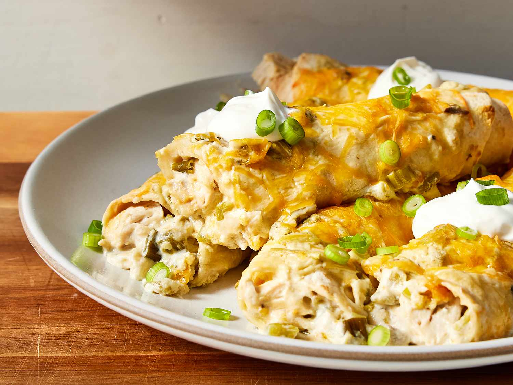
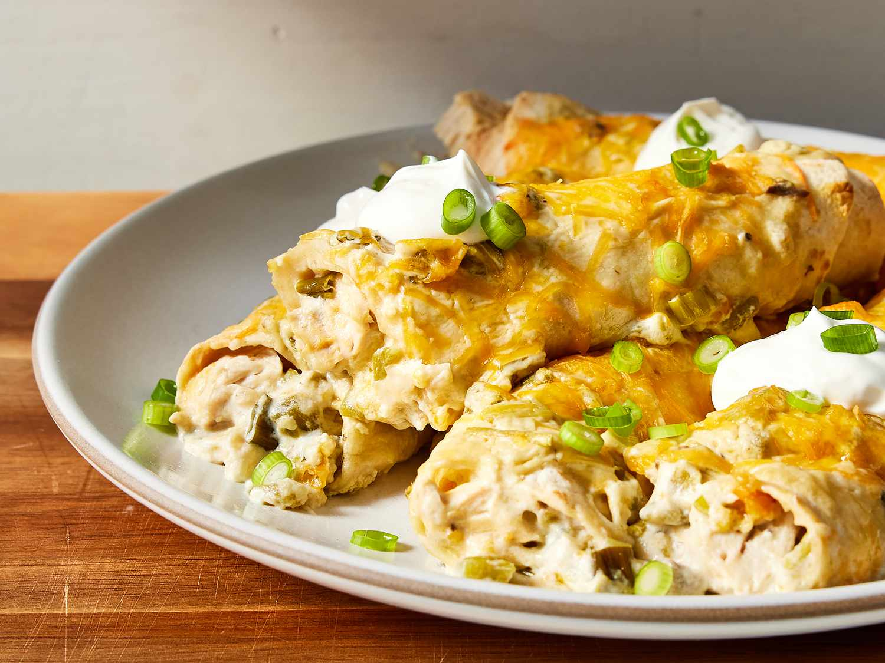

3 Recipes
by Anthony Bekhet
Chicken Shawarma is a Middle Eastern dish made from marinated chicken that’s stacked on a spit and slow-roasted.
It’s typically served in a wrap or pita with veggies and sauces.
It's moderately easy to make at home with the right spices and a grill or oven.
Broccoli Cheddar Soup is a creamy, comforting soup made with broccoli and sharp cheddar cheese.
It originates from American cuisine, often served in bread bowls
It's fairly easy to make at home using basic ingredients like broccoli, cheese, milk, and stock.
Chicken Enchiladas are a popular Mexican dish consisting of corn tortillas rolled around a filling, usually of spiced chicken, and covered with a chili pepper sauce.
They are often topped with cheese and baked.
Making them at home is moderately easy but can be time-consuming due to the sauce preparation and assembly.

 
